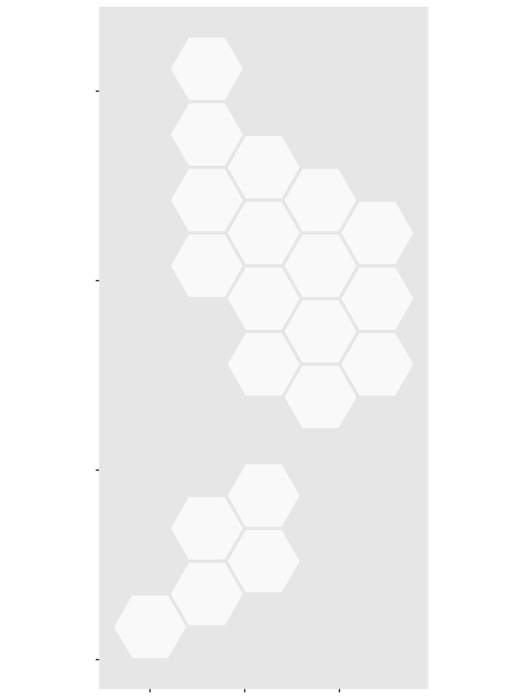
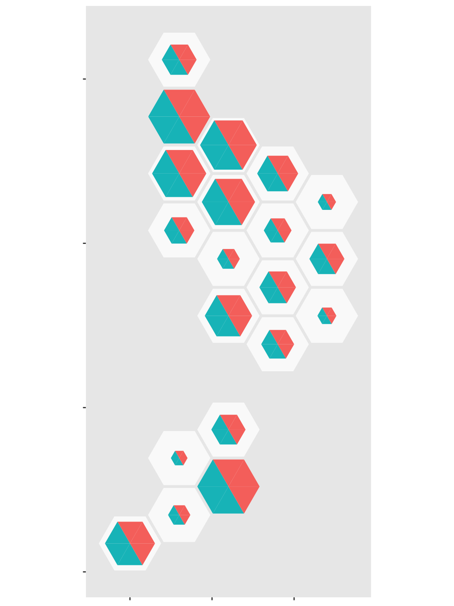
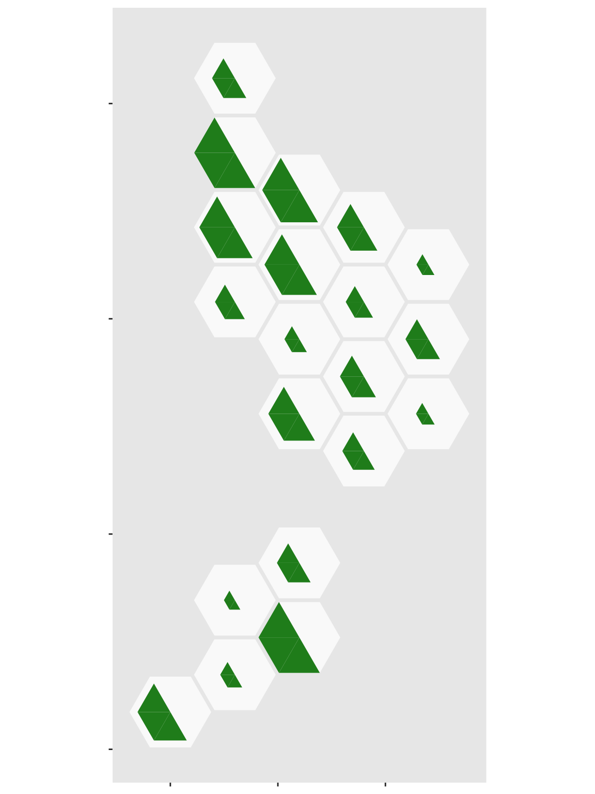
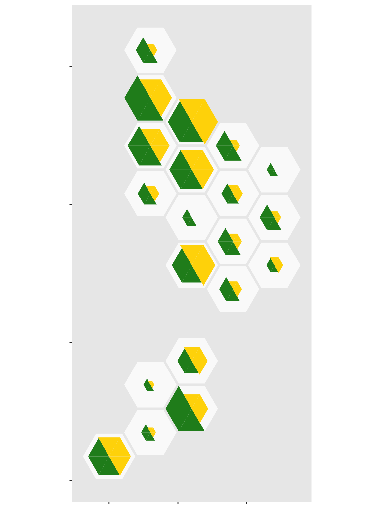
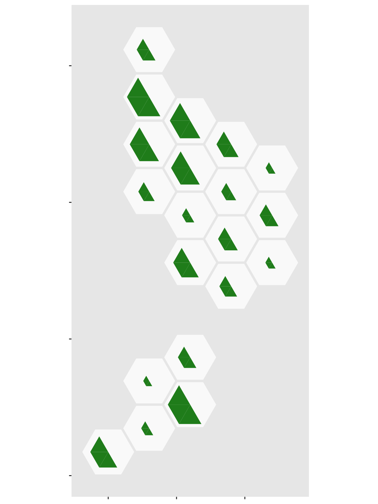
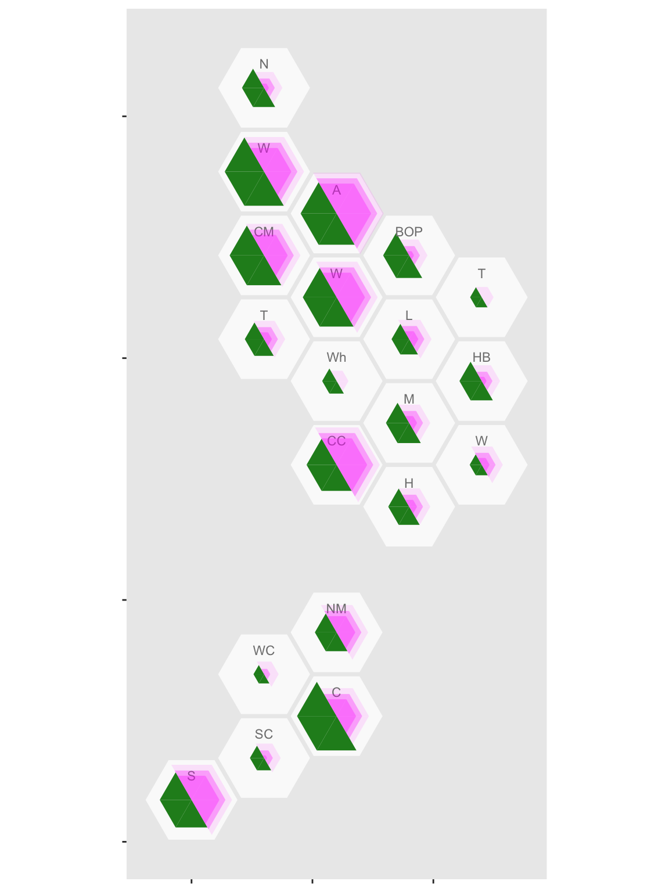

halfhex.RmdAnother use of triangular subdivision is to show counts and population sizes, as an alternative to just showing per capita rates. The use of per capita figures has been controversial in the COVID pandemic, because the natural size distribution of a cluster does not really depend on the size of the host population.
The NZ Ministry of Health has been releasing information about COVID-19 cases, and Chris Knox (of the NZ Herald) has been collating it on github. These data are from late March 2020.
Here, I’m going to map it by District Health Board. First, load the data
library(DHBins)
## Loading required package: ggplot2## Warning: package 'ggplot2' was built under R version 3.6.2data(nzcovid)
Next, we need population data. That’s also in the package
data(dhb_cars) popsize<-data.frame(dhb=dhb_cars$dhb, Total=rowSums(dhb_cars[,-1]))
I’m going to do a split hex map where there’s a hex for each District Health Board, with half of the hex showing the population and the other half showing the number of cases. That means I need to divide each hex into six triangles, and use three for population and the other three for number of cases. Actually, I need two superimposed hexes for each District Health Board, because you can’t vary the radius of a triangulated hex. Half of each hex will be NA.
pop_tri<-popsize[rep(1:nrow(popsize),each=6),] pop_tri$group<-rep(rep(c("blank","Population"),each=3),nrow(popsize)) pop_tri$order<-rep(c(1,2,6,3,4,5),nrow(popsize)) case_tri<-case_r[rep(1:nrow(case_r),each=6),] case_tri$group<-rep(rep(c("Cases","empty"),each=3),nrow(case_r)) case_tri$order<-rep(c(1,2,6,3,4,5),nrow(case_r))
Now, assemble the plot. First, an outline for each hex
ggplot(case_tri)+ geom_dhb(data=popsize, aes(map_id=dhb),fill="grey98")

Now, add the population sizes
ggplot(case_tri)+ geom_dhb(data=popsize, aes(map_id=dhb),fill="grey98")+ geom_dhbtri(data=pop_tri,aes(map_id=dhb,fill=group,class_id=order,radius=sqrt(Total)), coord=FALSE, show.legend=FALSE)

But we need to suppress half of that
ggplot(case_tri)+ geom_dhb(data=popsize, aes(map_id=dhb),fill="grey98")+ geom_dhbtri(data=pop_tri,aes(map_id=dhb,fill=group,class_id=order,radius=sqrt(Total)), coord=FALSE, show.legend=FALSE)+ scale_fill_manual(values=c(blank=NA,Population="forestgreen",Cases="gold",empty=NA))

Now, do the same thing with the case data
ggplot(case_tri)+ geom_dhb(data=popsize, aes(map_id=dhb),fill="grey98")+ geom_dhbtri(data=pop_tri,aes(map_id=dhb,fill=group,class_id=order,radius=sqrt(Total)), coord=FALSE, show.legend=FALSE)+ scale_fill_manual(values=c(blank=NA,Population="forestgreen",Cases="gold",empty=NA))+ geom_dhbtri(data=case_tri, aes(map_id=DHB,fill=group,class_id=order,radius=sqrt(Count)), coord=FALSE, show.legend=FALSE)

And add abbrevations for each District Health Board, offsetting them up so they don’t obscure the data
ggplot(case_tri)+ geom_dhb(data=popsize, aes(map_id=dhb),fill="grey98")+ geom_dhbtri(data=pop_tri,aes(map_id=dhb,fill=group,class_id=order,radius=sqrt(Total)), coord=FALSE, show.legend=FALSE)+ scale_fill_manual(values=c(blank=NA,Population="forestgreen",Cases="gold",empty=NA))+ geom_dhbtri(data=case_tri, aes(map_id=DHB,fill=group,class_id=order,radius=sqrt(Count)), coord=FALSE, show.legend=FALSE)+ geom_label_dhb(short=TRUE, position=position_nudge(x=0,y=0.5),col="grey50",size=2.5)
It looks as though rural areas are at lower risk, but so is Canterbury (about 80% of which is Christchurch). We might want to put confidence intervals on, to see if these differences are larger than you’d get from random variation. It’s easy to model the purely random part of this with a Poisson distribution, but we don’t have data on ascertainment rates so the variation will be underestimated.
I used poisson.test() to compute exact confidence intervals for the rates, since the counts in some areas are (happily) very small.
case_tri$low<-sapply(case_tri$Count, function(n) poisson.test(n)$conf.int[1]) case_tri$high<-sapply(case_tri$Count, function(n) poisson.test(n)$conf.int[2]) case_tri$total_scaled<- with(case_tri, 0.95*Count/max(high)) case_tri$low_scaled<- with(case_tri, 0.95*low/max(high)) case_tri$high_scaled<- with(case_tri, 0.95*high/max(high))
Also, I want the population half of the hex scaled to match the true count, not the outer confidence limit
And finally, we can assemble it. First, the population half
ggplot(case_tri)+ geom_dhb(data=popsize, aes(map_id=dhb),fill="grey98")+ geom_dhbtri(data=pop_tri, aes(map_id=dhb,fill=group,class_id=order,radius=sqrt(total_scaled)), coord=FALSE, show.legend=FALSE)+ scale_fill_manual(values=c(blank=NA,Population="forestgreen",Cases="magenta",empty=NA))

Now add the case half in three, partially transparent, sections: the upper limit, the observed value, then the lower limit
ggplot(case_tri)+ geom_dhb(data=popsize, aes(map_id=dhb),fill="grey98")+ geom_dhbtri(data=pop_tri, aes(map_id=dhb,fill=group,class_id=order,radius=sqrt(total_scaled)), coord=FALSE, show.legend=FALSE)+ scale_fill_manual(values=c(blank=NA,Population="forestgreen",Cases="magenta",empty=NA))+ geom_dhbtri(data=case_tri, aes(map_id=DHB,fill=group,class_id=order,radius=sqrt(high_scaled)), alpha=0.1,coord=FALSE, show.legend=FALSE)+ geom_label_dhb(short=TRUE,position=position_nudge(x=0,y=0.5), col="grey50",size=3)+ geom_dhbtri(data=case_tri, aes(map_id=DHB,fill=group, class_id=order, radius=sqrt(total_scaled)), alpha=0.3,coord=FALSE, show.legend=FALSE)+ geom_dhbtri(data=case_tri, aes(map_id=DHB,fill=group,class_id=order,radius=sqrt(low_scaled)), alpha=0.3,coord=FALSE, show.legend=FALSE)

Most of the variation between DHBs can be explained by population size and Poisson variability. For example, we can see that Tairāwhiti DHB, at the top right of the North Island, had zero cases and so has no inner or middle hex. Its outer hex is a good match for population size, indicating that the rate of cases is not significantly low. On the other hand, Canterbury DHB, on the east of the South Island, had fewer cases than would be expected.